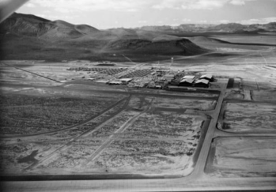
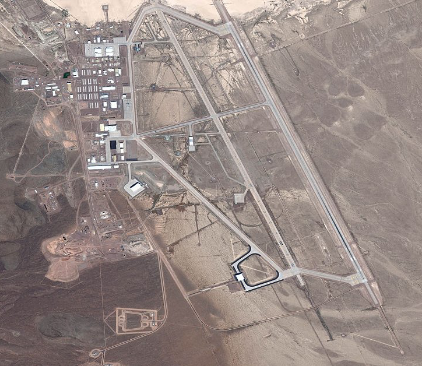

Overview
A UFO, or an unidentified flying object, refers to any phenomenon above the ground that cannot be recognized or explained. While many consider UFOs to be a recent concept, they actually have been a part of human culture for centuries, even before the Common Era began. But how did the modern idea of these objects begin? If you have ever been intrigued by the idea of UFOs, here is everything you could possibly want to know.
Pre-1900's Reports
While most recorded UFO sightings have occurred after the nineteenth century, the history of this concept begins much earlier, primarily from the Roman Empire. One of the earliest recordings occurred in 218 BCE, when the Roman historian Titus Livius spoke of “phantom ships” moving throughout the sky. This description is similar to the modern idea of flying saucers.
Centuries later, another historian, Cassius Dio, gave a peculiar report of an aerial phenomenon. According to his account, an unknown material described as “fine rain resembling silver” fell from a sky with no clouds. Dio then used this material to plate bronze coins. Perhaps the most baffling detail of this story is that the silver coating disappeared by the time four days had passed. This is very similar to the substance called “angel hair”, which is often found in stories of sightings.
After this, the frequency of UFO sightings took a large decline, with over a millennium going by with no significant accounts. One interesting report occurred in 1561 in the city of Nuremberg, where witnesses reported that they saw an aerial battle, with hundreds of spheres and other objects moving throughout the sky. According to them, it ended with the appearance of a large black triangular form, then a large crash outside of the city.
The origin of the term “flying saucer” comes from a newspaper article from January of 1878, where a farmer in Texas reported seeing a speeding circular object in the sky. The farmer claimed that the object was about the size of a saucer from where he stood, which is most likely where the term was popularized.
Sightings of the Twentieth Century
With the advancements of flight technology in the twentieth century came a larger number of UFO sightings. In 1916, a pilot near the English city of Rochford described witnessing a series of lights rising in the sky, an event that is relatively common in reports. Ten years later, two United States pilots reported their own encounters, with one describing six “flying manhole covers” in the sky, bearing similarities to the flying saucer account. The other spoke of a large cylindrical object.
Another event that helped to spread the term “flying saucer” was a newspaper publication in 1947. According to the report, a businessman named Kenneth Arnold claimed witnessing nine objects flying at fast speeds near Mount Rainier in Washington. While he proclaimed that these objects were shaped like crescents, the newspaper wrote that they were shaped like saucers. This is because Arnold said that they moved “like saucers skipping on water”.
In 1948, tension before the Cold War was continuing to grow, and the possibility of UFOs being advanced Soviet aircraft was a concern to the United States government. The Air Force began an investigation, titled Project Sign, looking at UFO reports. Eventually, this was succeeded by Project Blue Book, which complied over 12,000 events. About 6% of these sightings could not be identified by the government.
By the time of the 1950s, the phenomenon of UFOs had spread throughout the United States and was well-known among its people. The amount of reports had continued to climb and was catching the attention of the government. In 1953, a panel of physicists, an astronomer, and a rocket engineer was formed, reviewing evidence of UFOs. According to their findings, 90% of UFO sightings were able to be attributed to astronomical events, such as bright stars, meteors, and ion clouds. Objects from the planets were also said to cause confusion, such as searchlights and other aircraft. Parts of the panel’s reports were kept classified until 1979, which only helped in creating more mystique about the phenomenon.
Area 51
One of the biggest mysteries regarding UFOs in the elusive Area 51, a government site found in Nevada. During the 1950s, many sightings of unexplainable events in the sky occurred around this site. Area 51’s contents were kept a secret to the general public, which fueled rumors about the site being used to host extraterrestrial lifeforms or spacecraft.
Debates over the purpose of Area 51 continued to churn for decades, with the extraterrestrial theory being a prime candidate that echoed throughout the public, being referenced in media and news outlets in general.
However, in 2013, the Air Force released declassified information regarding the site and the aircraft testing that took place there. During the Cold War, Area 51 was used as a testing ground for advanced aircraft.
In reality, Area 51 was also connected to the Cold War, gathering information on the Soviet Union and helping to construct aircraft that can move over two thousand miles an hour. The testing of these planes is most likely the cause of the various sightings that happened around the area, which led to more speculation and reports of UFOs. While this certainly explains most of the sightings in Nevada, the remaining secrets of what else Area 51 still contains continues to inspire discussion even today.
The Roswell Mystery
While some aspects of UFOs and their history have been throughly explored and explained, there are still some events that cannot be agreed upon. Perhaps the biggest incident regarding UFOs in American history can be found in Roswell, New Mexico. In the summer of 1947, the U.S. Army Air Forces released information to the press, stating that a “flying disc” had been recovered from a ranch 75 miles north of Roswell.
Curiously, Army officials quickly abandoned their initial claim, disclosing that the debris was actually from a weather balloon. While this may have been a reasonable explanation, some eyewitness details suggested that alien bodies were recovered from the crash site. This description led to more speculation that the weather balloon explanation was a cover-up for what actually happened in Roswell.
As it turns out, skeptics were right in their questioning of the event, but not in the way that they imagined. In 1994, the Air Force released a report that shed light on the incident, explaining the wreckage of a spy device as part of Project Mogul. This device was a string of balloons that would float above the USSR, capturing sound waves at high altitudes. Because of the tension of a war, as well as the project’s secretive nature, this false explanation was created in order to not reveal spy technology to potential enemies.
Testing...
Testing out type here!